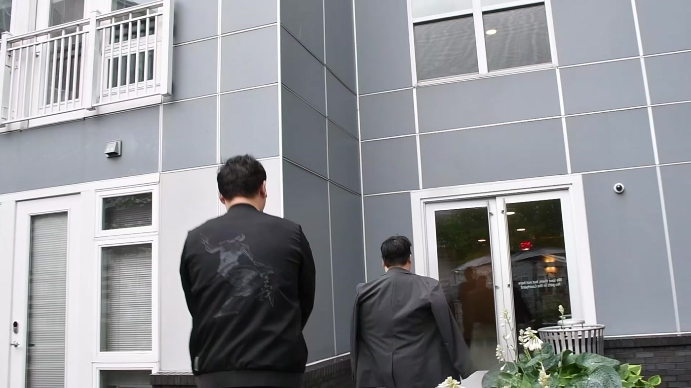

Featured · Narrative ShortFine PrintNarrative Short Film
Two people arrive at the negotiating table with their own agendas, but leave without an agreement. The required pencil prop and line of dialogue are woven into the story, supporting the scene’s logic and character relationships.
Creative Focus
I built the story around a failed negotiation, shaping the characters’ motivations, dialogue, and required prop into one coherent scene.
ToolsAdobe Premiere Pro (editing) · CapCut (effects and captions)
Watch on YouTube ↗